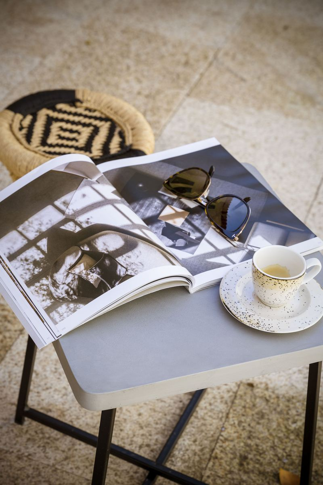
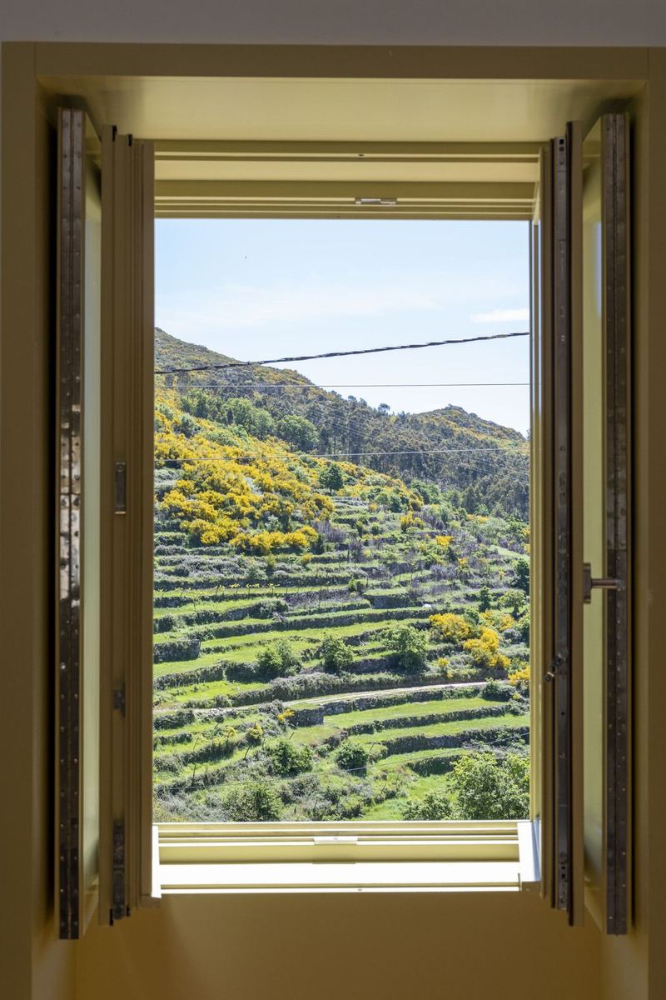
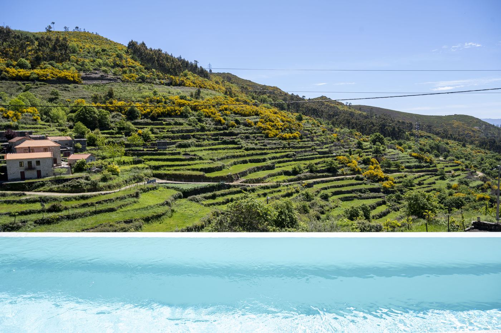
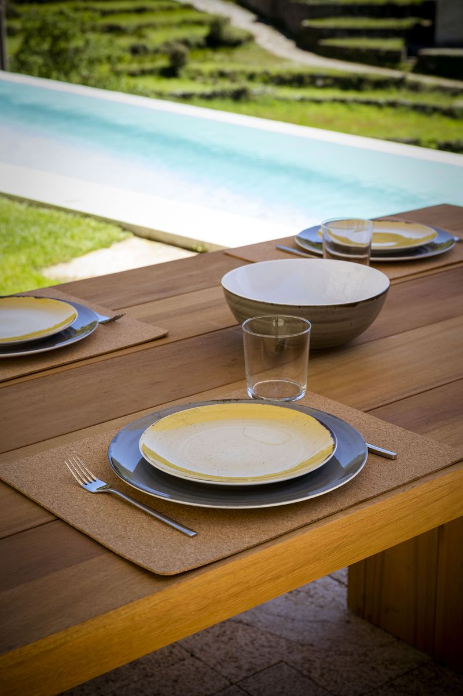
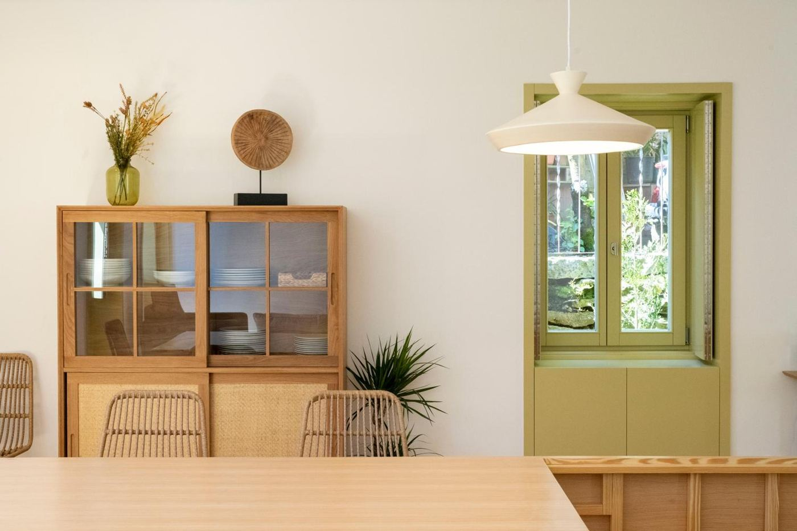
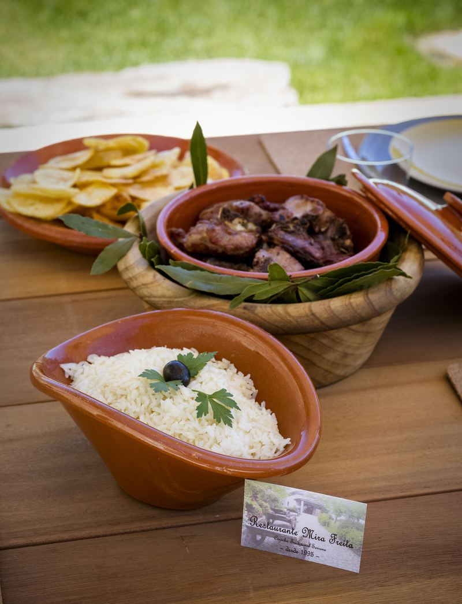
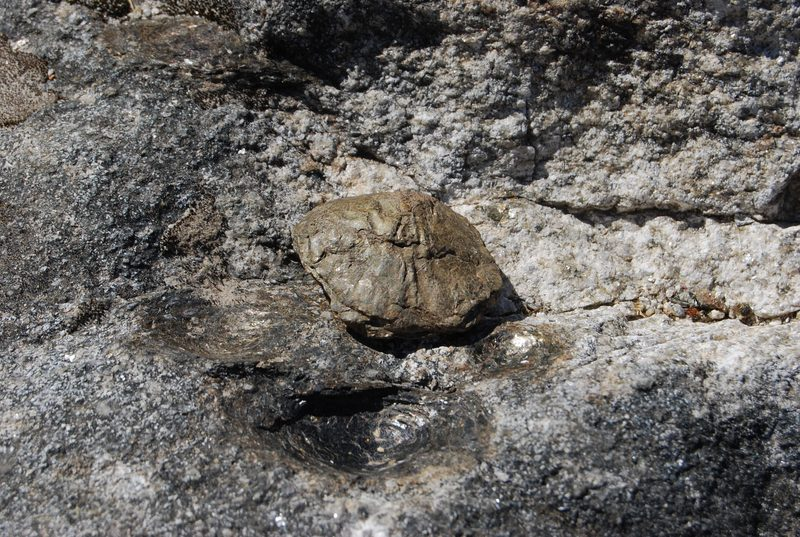
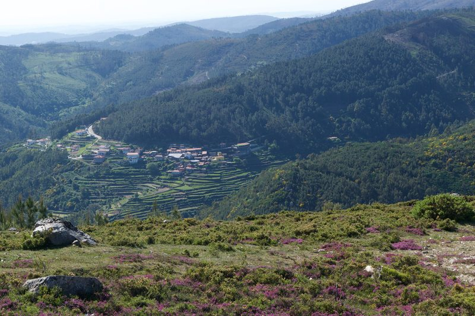

Na aldeia da Felgueira, Vale de Cambra, a um passo da Serra da Freita.
A casa

Na aldeia da Felgueira, no Vale Mágico, há uma casa de granito onde os dias se fazem de mergulhos, almoços demorados e janelas que parecem quadros sobre o vale.


A piscinasobre o vale
Água salgada, virada para o vale e para a serra.
12 × 3,5 m
Almoços ao pé da água
Um terraço de granito com mesa comprida, guarda-sol e churrasqueira a carvão. Ao lado, o relvado com espreguiçadeiras e um chuveiro exterior.


O coração da casa
A sala, a mesa e a cozinha num só espaço, com madeira clara, granito à vista e janelas verde-azeitona abertas para os socalcos.
«A Casa da Gueira superou as minhas expectativas, se nas fotos já me sentia a viver dentro de um quadro… quando cheguei fiquei encantada! O lugar ideal para passar bons momentos entre amigos ou família. A repetir, sem dúvida.»
Francisca, hóspede da Casa da Gueira
Experiências por perto
A aldeia da Felgueira à porta e a Serra da Freita a um passo.

2 min a pé
Restaurante Mira Freita
Na aldeia, para uma refeição sem pegar no carro.

1 km
Casa das Pedras Parideiras
A visita mais perto de casa.

1,5 km
Estação Meteorológica
Uma vista de cortar a respiração sobre a Serra da Freita.